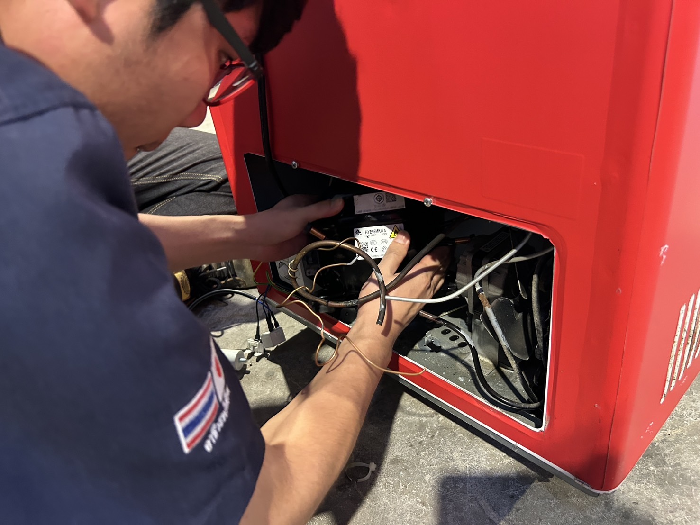
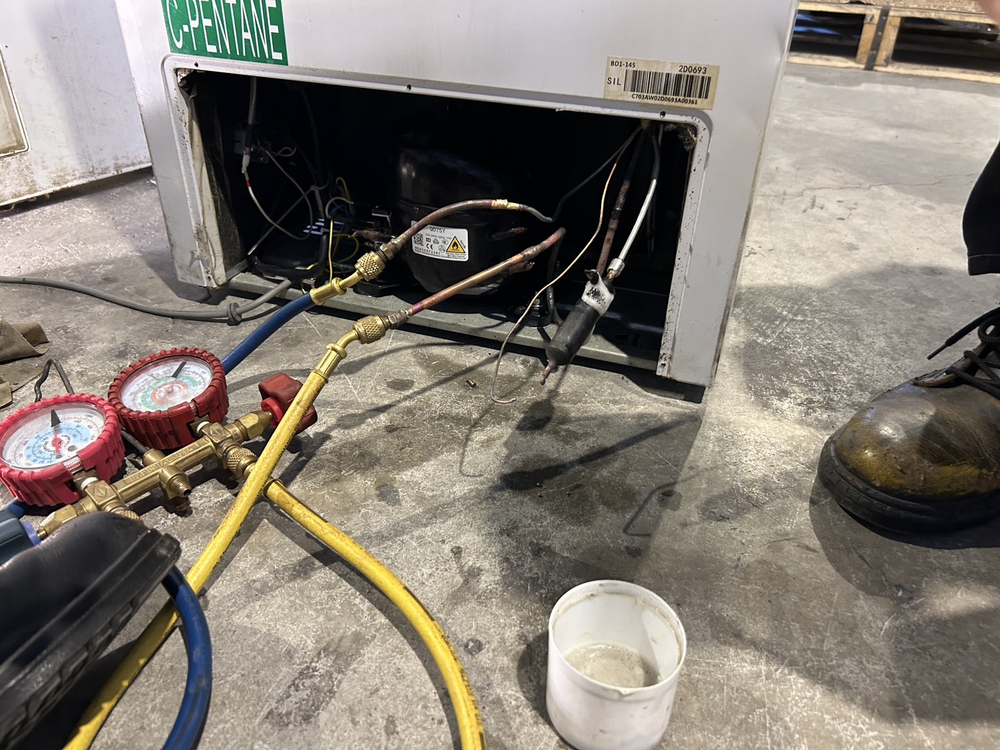
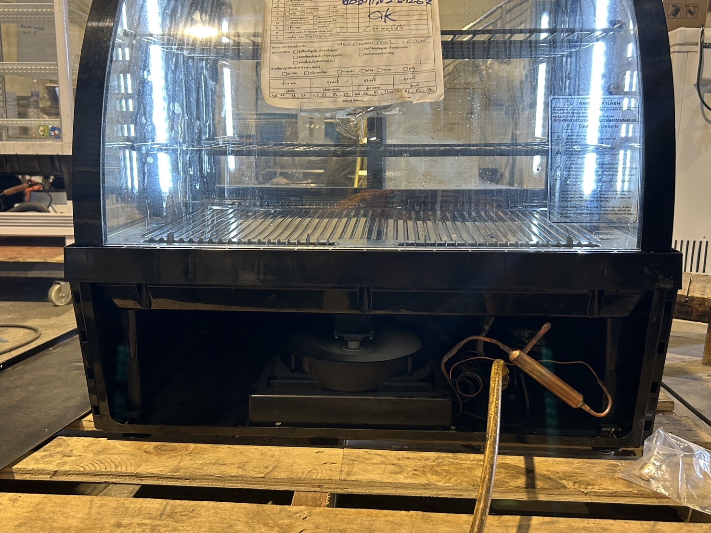

ขั้นตอนการเปลี่ยนคอมเพรสเซอร์
1. เตรียมการและตัดไฟ
เริ่มต้นด้วยการปิดปลั๊กและตัดไฟจากตู้แช่ทุกครั้งเพื่อความปลอดภัย จากนั้นถอดแผ่นปิดหรือฝาครอบคอมเพรสเซอร์เพื่อให้สามารถเข้าถึงอุปกรณ์ภายในได้สะดวก ตรวจสอบข้อมูลรุ่น ขนาด และชนิดน้ำยาที่ใช้จากฉลากของตู้แช่ เพื่อเลือกคอมเพรสเซอร์ใหม่ที่เหมาะสม
2. ดึงน้ำยาออกจากระบบ
สำหรับน้ำยา R-134a หรือ R-404a ให้ต่อเกจวัดแรงดันเข้ากับจุด Service Valve หรือเชื่อมพอร์ตเสริมที่ท่อดูด จากนั้นใช้เครื่องดูดน้ำยา (Recovery Machine) ดึงน้ำยาออกจากระบบลงถังเก็บอย่างปลอดภัย ห้ามปล่อยน้ำยาออกสู่บรรยากาศโดยตรง เนื่องจากผิดกฎหมายและเป็นอันตรายต่อสิ่งแวดล้อม
หมายเหตุสำหรับน้ำยา R-600a:
เนื่องจากเป็นแก๊สไฮโดรคาร์บอนที่ติดไฟง่าย ให้ถ่ายน้ำยาในพื้นที่โล่ง ห่างจากเปลวไฟ และไม่ใช้เครื่องดูดแบบไฟฟ้าโดยเด็ดขาด วิธีที่ปลอดภัยคือเจาะรูเล็ก ๆ ที่ท่อ Discharge เพื่อให้แก๊สระบายออกช้า ๆ โดยต้องดำเนินการโดยช่างที่มีความชำนาญเท่านั้น
3. ถอดคอมเพรสเซอร์เก่า
ก่อนถอดคอมเพรสเซอร์ ให้ถอดสายไฟ คาปาซิเตอร์ รีเลย์ และโอเวอร์โหลดออกจากตัวคอมเพรสเซอร์ จากนั้นใช้เครื่องตัด ท่อทองแดงทั้งสามท่อ ได้แก่
-ท่อดูด (Suction)
-ท่อจ่าย (Discharge)
-ท่อน้ำยา (Process line)
เมื่อถอดตัวยึดฐานคอมเพรสเซอร์ออกแล้ว ให้ยกคอมเพรสเซอร์เก่าออกจากเครื่อง

4. ติดตั้งคอมเพรสเซอร์ใหม่
นำคอมเพรสเซอร์ใหม่มาติดตั้งเข้ากับฐานให้แน่นหนา จากนั้นติดตั้ง Filter/Drier ใหม่ที่ท่อจ่าย เพื่อป้องกันความชื้นและสิ่งสกปรกในระบบ
เชื่อมต่อท่อทั้งสามเข้ากับคอมเพรสเซอร์ด้วยการเชื่อม (Brazing) ตรวจสอบทิศทางการเชื่อมดังนี้:
-Suction Line → ด้านบนของคอมเพรสเซอร์
-Discharge Line → ด้านข้างของคอมเพรสเซอร์
-Process Line → ใช้เติมน้ำยา
ตรวจสอบความเรียบร้อยและความแน่นหนาของท่อ อย่าให้มีการอุดตัน
5. ตรวจสอบการรั่ว (Leak Test)
ต่อเกจวัดแรงดันเข้าระบบ แล้วอัดไนโตรเจนด้วยแรงดันประมาณ 100-150 psi ตรวจสอบจุดเชื่อมทั้งหมดโดยใช้เครื่องตรวจรั่วหรือพ่นสบู่ผสมน้ำ หากพบฟองอากาศแสดงว่ามีรอยรั่ว ควรเชื่อมแก้ไขและทดสอบใหม่

6. ดูดสูญญากาศ (Vacuum)
ต่อ Vacuum Pump เข้าท่อ Process เปิดปั๊มดูดสูญญากาศประมาณ 30–60 นาที หรือจนได้ระดับ -29 inHg ปิดวาล์วและรอดูแรงดันว่าคงที่อย่างน้อย 10 นาที เพื่อยืนยันว่าไม่มีรอยรั่ว

7. เติมน้ำยาแอร์
เติมน้ำยาตามชนิดและปริมาณที่ระบุในฉลาก โดยใช้เครื่องชั่งน้ำหนักเพื่อความแม่นยำ
-R-134a และ R-404a: เติมช้า ๆ จนได้ปริมาณตามฉลาก
-R-600a: เติมอย่างละเอียดด้วยเข็มเติม พร้อมควบคุมแรงดันระหว่าง 45-55 psi
ข้อควรระวัง: ห้ามเติมน้ำยาเกิน เนื่องจากจะทำให้แรงดันสูงเกินไป ส่งผลให้คอมเพรสเซอร์ทำงานหนักและระบบเย็นไม่เต็มที่

8. ทดสอบระบบ
เสียบปลั๊กและเปิดตู้แช่ ตรวจสอบการทำงานของคอมเพรสเซอร์โดยฟังเสียงขณะทำงาน ควรไม่มีเสียงสั่นหรือเสียงครางผิดปกติ ตรวจเช็กอุณหภูมิภายในตู้ว่าเย็นลงตามปกติในเวลา 10-30 นาที สังเกตค่าแรงดันในเกจและตรวจวัดกระแสไฟฟ้าของคอมเพรสเซอร์ว่าตรงตามที่ระบุในฉลากหรือไม่